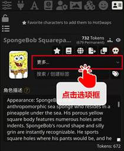

世界书
作者：@破坏轨道
1. 功能简介
世界书 (Lorebooks)旨在为你的角色卡提供更为完整的背景信息。
它的功能类似于【词典】或【百科】：
比如你正在玩一张海绵宝宝的角色卡，你发送一段话：“海绵宝宝出发去蟹堡王工作。”这时claude可能无法理解“蟹堡王”是什么。
而如果你有以下世界书：
这时，你发送的话中的“蟹堡王”三个字会触发世界书，claude就能够理解蟹堡王是一家快餐店。
世界书的最基本使用方式是【触发】，即以关键词 (Keywords) 触发内容 (Content)
2. 基础操作
你可以下载别人的世界书（类脑Discord频道）， 也可以创建自己的世界书。仅通过本节内容， 你就能学会世界书最基本的操作方法。
注意
如果你已经会导入、绑定、创建等基础操作，请跳转至进阶使用继续阅读。
2.1 导入导出
条目
本条目是指手动导入世界书，导入角色卡自带世界书的情况参见下文的自带绑定的角色世界书。
-
在导入之前，先确认你下载的世界书的格式。世界书和破限一样，后缀是.json。
-
打开酒馆，点击页面并导入json文件。

- 导入成功后，下滑页面，就可以看到作者所创建的世界书了。
.
点击左侧的小箭头，可以打开查看每一条目的详细信息。一般来说，新手下载世界书后无需进行修改。
2.2 重命名和删除
如果你下载的世界书是中文命名的， 那么导入酒馆后会转换成一串字符。
数字和英文则不会发生变化。因此有时我们需要重命名世界书。如果不需要该世界书，则可以删除。
2.3 设置世界书
提示
我们手动下载的世界书分为两类，【全局世界书】和【角色世界书】。
全局世界书：对你的所有角色卡都起效，例如武器大全、服装大全等。
角色世界书：只对它绑定的角色卡起效，例如海绵宝宝的故事背景。
2.3.1 设置全局世界书
- 点击后弹出世界书选项框
- 勾选你想使用的全局世界书
- 勾选后，安卓版会显示项数，电脑版会显示世界书名称
2.3.2 设置角色世界书
角色世界书需要绑定角色卡，步骤不同于全局世界书。我们首先切换到角色卡界面：
点击OK，我们会看到角色卡界面的小地球变绿了，
这说明世界书和角色卡绑定成功了🎉。再次点击绿色小地球，酒馆会跳转到世界书页面。
2.3.3 自带绑定的角色世界书
有一些角色卡是自带绑定的，我们导入卡后，点击角色卡，就会收到一条提示，点击Yes即可。然后该卡会自动创建相应的世界书并自动绑定。
2.3.4 世界书跟随角色卡导出
如果你希望把带世界书的角色卡分享给其他人玩，那么先确保你的角色卡界面的小地球是绿色状态，然后直接导出角色卡即可。
2.3.5 解除绑定世界书
解除全局世界书的作用，只需在相应选项框中取消勾选即可。然而有的朋友可能会发现，
角色世界书无法通过再次点击小地球解除绑定：点击后会跳转至世界书页面。
要解除角色世界书的绑定，我们需要点击小地球下方的“更多…”选项框。

2.4 创建世界书
更多时候，我们无法找到满意的世界书，这时就需要自己创建世界书或创建条目了。
-
来到世界书页面，点击“🌏New”图标，创建新世界书，并为你的世界书命名。
-
创建成功后，点击工具栏中的➕，创建新条目。其他图标的作用会稍后介绍。
-
点击左侧小箭头打开条目明细。
- 填写关键词和内容。注意，如果你希望多个关键词都指向一个内容，那么你需要用英文半角“,”将这些关键词隔开。（不明白什么是半角的去百度）

-
其他图标。这些图标不是特别常用
-
同时展开所有条目的细则。
- 同时折叠所有条目的细则。
- 一键将关键词填入标题。如果有多个关键词则填入第一个。如上述示例中，“宝可梦”一词会被填入“Entry Title/Memo”栏。
- 重命名。上文已介绍。
至此，世界书的基础操作已经介绍完毕了！！！
然而——虽然世界书有助于剧情的补充和引导，但不一定保证你所设定的内容一定生成在角色的回复中。为了加强世界书的作用，以下是一些进阶的玩法。
3. 进阶使用
3.1 上下文的概念
在进阶教程之前，上下文 (Context) 是你必须知道的重要概念。你可以把上下文理解为“记忆”。
我们通常说 Claude 的记忆是100k 25k，就是指 Claude 的上下文容量为25k tokens。过多的 tokens 会被清出上下文，也就是我们常说的“记不住了”。
3.1.1 提示 (Prompt)
我相信有的朋友并不知道 prompt 的概念。虽然 prompt 应该翻译为提示，不过我们一般仍称其为 prompt。
prompt 的作用是让 AI 按照用户输入的提示去输出内容。简而言之，基本上用户输入 AI 的任何信息都属于 prompt。
那么“用户输入 AI 的任何信息”包括什么呢？如果你使用 Claude 模型，那么在“预设”界面，你就可以看到它列出了默认的 prompts：
蓝色部分
这一部分 prompt 是与角色扮演直接相关的。你可以在聊天过程中直观地感受，甚至修改这类 prompt。
红色部分
这一部分 prompt 是与角色扮演间接相关的。虽然你多数时候无法在聊天过程中感受到这些 prompt，但是它们绝对地影响着聊天，如文笔、输出长度、是否允许色色、是否道歉等。
我不会在此过多地介绍这些 prompt。这里你需要记住的是：这些 prompt 是有上下顺序的。
它们之间的顺序排布并不是随意的。
3.1.2 Prompt 在上下文中的顺序
通常，预设（或称破限）作者都会有一套经其测试的、证明好用的 prompt 顺序，并不一定总是上图的顺序。如果你并没有研究预设的打算，那么你只需要熟悉蓝色 prompt 的顺序即可，它们遵循以下规律： 顺序越靠下的 prompt，对你当前对话发挥的影响就越强！
由于本篇并不介绍破限，因此下文只介绍蓝色部分的 prompt。 让我用草图来告诉你它们是如何运作的。你可以先把上下文想象成一个容器：
好，那么显而易见，随着你的聊天记录越来越多，就会有越来越多的内容被推出上下文。但是！SillyTavern 可以让一些重要内容不被推出去，于是就有了永久 prompt 和临时 prompt 之分：
| 永久 prompt：无论对话多长，也不会被推出上下文。 临时 prompt：对话长到一定程度后，就会被推出上下文。 |
|---|
（以下是不同 prompt 的属性表）
| 世界书（设置为常数：稍后会解释该功能） 永久 用户描述 永久 角色描述 永久 性格总结 永久 场景 永久 对话示例（除非被设置为永久） 临时 聊天记录 第一条消息 临时 用户和角色的对话 临时 作者注释 永久 通常我们不会写用户描述、性格总结和场景，或者不会在其中写太多内容。对话示例和绝大多数聊天记录，按照其属性，在长时间聊天后会被推出上下文。 | 作者注释： 这是一项把指定 prompt 插入聊天记录中指定位置的功能。插入深度为几，就把作者注释插入你和角色聊天的第几条消息之上（包含你刚发的消息、角色回复的消息、你发的消息）. |
|---|---|
所以，聊天越来越长以后，不考虑用户描述、性格总结和场景的话，通常真正的上下文图大概长这样：
注：本“对话示例”指角色卡高级定义内的对话示例框
好，现在相信你已经对 prompt 的顺序有了初步的概念。鉴于本篇只是世界书教程，我仅在此点明：
Claude cookie 的上下文为 25k tokens，因此当聊天记录越来越长以后，你会发现无论是世界书，还是角色描述，都被挤在上下文的顶端，对你当前对话发挥的作用微乎其微。那么如果你希望某世界书条目发挥强效时，该怎么办呢？请继续阅读下文。
3.2 条目参数
点击条目左侧小箭头，可以看到很多参数和选项。为了便于区别，我个人把这些区域的设置称为“条目参数”。

这里有几个我们上文未介绍的功能：插入位置 (Position)、插入深度 (Depth)、插入顺序 (Order)、概率 (Trigger %)、🟢状态 (Status)、逻辑 (Logic)、筛选角色 (Filter to Characters)，以及排除角色 (Character Exclusion)。前五个功能较为常用。
这里有几个我们上文未介绍的功能：插入位置 (Position)、插入深度 (Depth)、插入顺序 (Order)、概率 (Trigger %)、🟢状态 (Status)、逻辑 (Logic)、筛选角色 (Filter to Characters)，以及排除角色 (Character Exclusion)。前五个功能较为常用。
点击选项框，你会发现有五个选项（见下表）。如果你理解了上下文的概念，这些选项便非常容易理解。
| 名称 说明 发挥作用 备注 角色定义之前 将条目内容插入角色描述上方。 最弱 无 角色定义之后 将条目内容插入角色描述下方。 稍强于“角色定义之前”，但仍然很弱。 无 作者注释之前 将条目内容插入作者注释上方。 较强 跟随作者注释变动 作者注释之后 将条目内容插入作者注释下方。 极强。如果同时修改作者注释的插入深度，可以使世界书发挥最强作用。 跟随作者注释变动 @D 按插入深度插入。 可变 无 |
作者注释前后的世界书条目，其位置也是跟随作者注释的插入深度而变动的。比如你将作者注释的插入深度设置为0，将世界书设置为“作者注释之后”，那么该世界书的效力就是强中强。
注意
上图描绘的仅是聊天记录很长时的情况。而在任何新对话开始时（聊天记录很短时），角色描述、角色描述前后的世界书、第一条消息，这三者对你的当前对话有着重要的影响，这种影响会像滚雪球一样在你的整个聊天过程中持续发挥作用。所以不要一股脑儿把所有世界书都放到作者注释前后
3.2.2 插入深度 (Depth)
在“插入位置”处选择“@D”后，“插入深度”下方就会出现一个文本框。你可以填入自定义数值。数值的意思同作者注释一样，指插入第 X 条消息的上方。
插入深度 @D
3.2.3 插入顺序 (Order)
在插入位置相同的情况下，多个条目的内容同时被触发时，插入顺序数值越大的条目，会被插入越靠下的位置，对当前对话的影响效力越强。如果你不进行排序，那么这些条目会按照创建时间排序，这非常不便于管理。
举例来说，上图中的四个条目若同时被触发，在上下文中的顺序就是这样的：
R288it 星球------------97
Zabra 星球-------------98
时空跃迁机及其制作步骤----99
NSFW Ali:Chat---------100
角色描述
……
聊天记录
注意若插入位置不同，则优先遵循插入位置：
上图中的七个条目若同时被触发，在上下文中的顺序就是这样的：
R288it 星球------------97
Zabra 星球-------------98
时空跃迁机及其制作步骤----99
NSFW Ali:Chat---------100
角色描述
坎状态栏微调------------100
……
聊天记录
状态栏规则--------------99
NSFW PLists-----------100
作者注释
聊天记录 |
我该如何决定条目之间的顺序？
首先记住插入越靠下的位置，对当前对话的影响效力越强。作为一个创作者，你一定希望 AI 能牢记你给的所有信息，然而这是不现实的。以下是一些建议：
-
把你的世界书条目按重要性排序，越重要、越希望 AI 牢记的内容放在越靠下的位置。
-
一些对角色行动影响较小的世界背景，可以放在角色描述之前。
-
状态栏和状态栏规则放在靠下的位置。如果你的角色在聊天过程中会忘记状态栏，可以尝试把世界书的状态栏条目往下移。
3.2.4 概率 (Trigger %)
触发世界书的概率。比如设为50，那么每次输入关键词时，只有50%的概率使内容得到触发。（——理论上确实是这样，然而实际上，经常有一种“大概率触发小概率事件”的体验。所以该功能似乎并不完善。）
3.2.5 状态 (Status)
点击🟢选项框，会发现有三个选项，以下是对它们功能的说明。
| 🟢 普通 正常地以关键词触发内容。 🔵 常数 不需要输入关键词，每次对话都会触发该条目内容，插入上下文。 ❌ 禁用 该条目无法被触发。 | | :---- | :---- |
小贴士
还记得我在上面说过，世界书设置为常数以后，就变成永久 prompt 了吗？此时，若搭配插入深度使用，就可以使世界书发挥和作者注释相同的作用了！ |
3.2.6 其他条目参数
逻辑 (Logic)
学过逻辑学或电路的同学对此一定不陌生：AND即与门，逗号即或门，NOT即非门。
在这个示例中：
-
选择 AND：只有对话中同时含有星球（或故乡）和小T（或兔子）时，内容才会被触发。
-
选择 NOT：只有对话中含有星球（或故乡），且不含小T（或兔子）时，内容才会被触发。
-
大多数时候，右框不填写内容。
筛选角色 (Filter to Characters)
该功能极少使用。它主要适用于“全局世界书”+“群组聊天”的情况。
假设在群组聊天中，有一个信息是只有小 T 知道的，别人都不知道，那么就把小 T 加入到该条目的筛选角色中。群组中的其他人无法触发此条目。
排除角色 (Character Exclusion)
同上，该功能亦极少使用。点击右边方框可以切换到“排除角色”模式。
假设在群组聊天中，有一个信息是只有小 T 不知道的，别人都知道，那么就把小 T 加入到该条目的排除角色中。群组中的只有小 T 无法触发此条目。
3.3 总体参数
点击 Activation Setting，可以看到很多参数和选项。为了便于区别，我个人把这个区域的设置称为“总体参数”。
3.3.1 角色背景插入策略
一些情况下，我们在聊天时需要同时使用全局世界书与角色世界书。如果你希望两者对你当前对话的影响程度不同，那么你可能就需要选择采取下面的其中一种策略
-
均匀排序 经我测试，这一功能非常乱，请尽量不要使用。在测试中，我发现越早创建的条目会被放在靠下的位置，而同时全局世界书会被整体放在角色世界书之下。
-
角色背景优先 角色世界书条目会放在全局世界书下面，它们内部再按照创建时间顺序排列
-
全局背景优先 角色世界书条目会放在全局世界书下面，它们内部再按照创建时间顺序排列。
然而，插入顺序和插入位置的优先级是绝对大于该插入策略的，即，不管你在总体参数中怎么改“角色背景插入策略”，真正输出 prompt 仍旧看 插入顺序 和 插入位置。【插入顺序100的角色世界书条目】无论如何都在【插入顺序99的全局世界书】之下。所以我完全不推荐使用“角色背景插入策略”功能。
3.3.2 扫描深度 (Scan Depth)
事实上，并不只有你发出的消息能触发世界书，聊天记录一样可以。聊天记录包括你发出的消息，以及角色回复的消息。
Info
将扫描深度设为1，那么“你新发出的一条消息”+“角色最近回复的一条消息”中，如果含有关键词，就能够触发世界书。
Info
将“角色最近的回复”和“你新发出的消息”视为“一对”消息，扫描深度1则能扫描一对，扫描深度2则能扫描两对……以此类推，最大可以扫描十对消息——即20条聊天记录。
扫描深度通常设置为1或2。如果你玩/写的是冒险类的卡，可能会需要更高的扫描深度。（虽然滑块还能继续拉高，但酒馆作者自述最多十对，有待验证。）
3.3.3 递归扫描 (Recursive scanning)
这应该是总体参数中最有用的一个功能。它的原理很简单：
简而言之，递归扫描可以让你的世界书激活世界书
可以直接用 SillyTavern 官方提供的例子：
在开启递归扫描的情况下，世界书条目 #1内容中的“鲁弗斯”一词就会触发世界书条目 #2中的内容。关闭递归扫描则不会触发。
以下三个参数是关于用两种方式来限制世界书能使用的最大 tokens 的，不太常用。但萌新有时候会不知道如何解决相关报错，因此我在这里还是简单说明一下：
-
上下文百分比 (Content %)：限制世界书条目 tokens 占上下文上限的百分比。
-
预算上限 (Budget Cap)：限制世界书条目于某个具体 tokens 数值内。设置为0则不生效。
-
溢出警报 (Alert on overflow)：开关。超出 tokens 限制，就会发出报错。
达到预算后会发生的事：
-
所有条目按照一定的优先级次序被触发，优先级低的会被挤出预算。预算之外的条目，即使发出了关键词，也不会触发条目内容。
-
已知的一些规则：
-
🔵常数条目优先于🟢普通条目.
-
“插入顺序”数值高的条目优先于数值低的条目。
-
直接提及关键词的条目优先于递归扫描的条目。
-
3.3.5 其他总体参数
-
区分大小写 (Case-sensitive keys)：开启后，对话中的单词和世界书中的关键词大小写必须一致，才能触发。比如 Rose（人名）和 rose（玫瑰）。主要针对英文。
-
匹配整个单词 (Match whole words)：开启后，只有相同的完整单词才能触发。比如对话中的 hotdog 无法触发关键词为 dog 的世界书。主要针对英文
-
最小激活次数 (Min Activations)
在上文中，有一种扫描消息条数的扫描方式：扫描深度。而最小激活次数提供了另外一种扫描方式：
直接扫描关键词。你设置了次数后，该功能会从你的最新一条消息开始，从下往上扫描聊天记录，扫描到指定次数的（任意）关键词才会停下。但该功能并不好用。由于可能在某条消息内多次出现某关键词，导致次数耗尽，因此极少使用。次数也受“最大深度”和“预算上限”的限制。设置为0则关闭该功能。
3.4 搭配正则表达式
该功能，简而言之，是以“好感度系统”为目的的一种玩法。比如，某角色对玩家的好感度达到几后，会表现出不同的性格，或者传达出更亲密的信息。实际上，任何“分阶段”的玩法都可以采用这个功能。详看👇